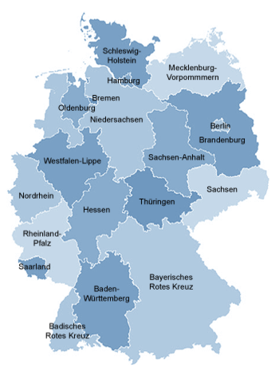

Die DRK Landesverbände
Lesezeichen - Servicetelefon

Rotkreuz Landesverbände

- Baden-Württemberg e.V.
- Badisches Rotes Kreuz e.V.
- Bayerisches Rotes Kreuz
- Berliner Rotes Kreuz e.V.
- Brandenburg e.V.
- Bremen e.V.
- Hamburg e.V.
- Hessen e.V.
- Mecklenburg-Vorpommern e.V.
- Niedersachsen e.V.
- Nordrhein e.V.
- Oldenburg e.V.
- Rheinland-Pfalz e.V.
- Saarland e.V.
- Sachsen e.V.
- Sachsen-Anhalt e.V.
- Schleswig-Holstein e.V.
- Thüringen e.V.
- Verband der Schwesternschaften vom DRK e.V.
- Westfalen-Lippe e.V.
Unterstützen Sie jetzt ein Hilfsprojekt mit Ihrer Spende